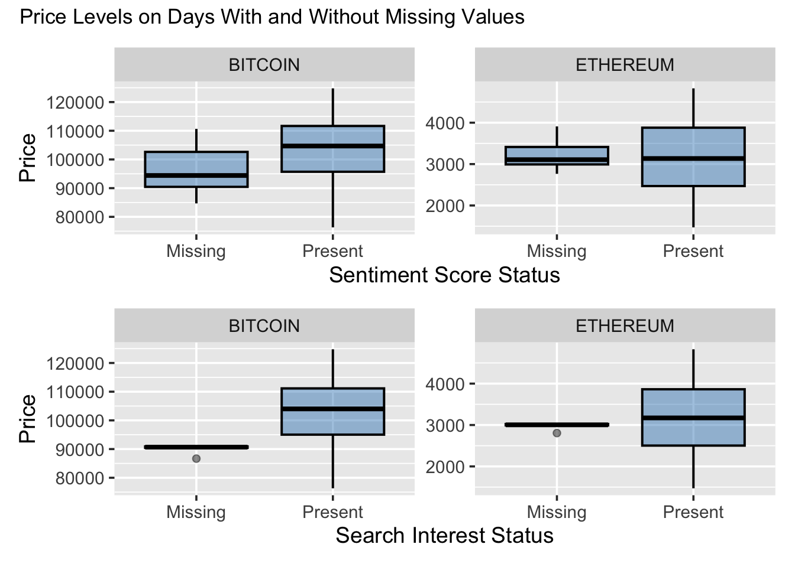

This project integrates three open data sources to examine how market activity, online sentiment, and public attention evolve for Bitcoin and Ethereum between December 2, 2024 and December 1, 2025. This one year window corresponds to the maximum period available under the free tiers of the APIs used in this project: both CoinGecko and Santiment restrict historical access to approximately the past 365 days unless a paid plan is used.
Daily market data come from the CoinGecko Market Data API, which compiles cryptocurrency prices, trading volumes, and market capitalization across major global exchanges. Online sentiment is obtained from the Santiment API, which analyzes social media discussions and other text based signals to estimate the overall tone toward each asset. Public attention is measured using Google Trends, accessed through the gtrendsR package in R, which provides normalized daily search interest for the keywords “bitcoin” and “ethereum.”
API requests require authentication, so all keys were stored privately in my .Renviron file. The data pull script automatically downloads the raw JSON responses, converts them into CSV files, and stores them in data/raw/. These raw files are then cleaned, standardized, and merged by coin and date. This includes aligning timestamps to a daily frequency, normalizing sentiment values, and handling a small number of missing days, primarily dates where Santiment did not report sentiment data, which is common due to API rate limits or gaps in social media coverage.
The final merged dataset contains one full year of daily observations for each coin and provides a reproducible foundation for exploring how market conditions, sentiment, and search behavior relate to cryptocurrency volatility.
All data collection and preprocessing steps are contained in 1 Data Pull.qmd, which downloads data from all three APIs, saves raw files to data/raw/, and writes the cleaned, merged dataset to data/clean/merged_crypto_sentiment_trends.csv.
Google Trends via gtrendsR:
(Daily search interest for “bitcoin” and “ethereum”)
2.1.2 Data Dictionary
Below are the variables included in the final cleaned dataset, along with their scales and how to interpret them.
date
Daily timestamp for each observation, used to align all behavioral and market indicators.
coin
Asset identifier ("BITCOIN" or "ETHEREUM"), allowing comparison across the two markets.
price
Daily closing price in USD. Interpreted directly in dollars to track overall price levels and trends.
volume
Total trading volume for the day, measured in units traded. Higher values indicate more active trading.
market_cap
Total market value in USD, reflecting the size and economic weight of each asset.
sentiment_score
Daily sentiment index ranging roughly from −0.1 to 0.1. Higher values indicate more optimistic discussion. Source: Derived from text sentiment API scores averaged by day.
search_interest
Google Trends search index between 0 and 100. Higher values represent greater public attention. Source: Directly from Google Trends API.
daily_return
Day over day percentage price change, typically between -0.1 and 0.1. Measures short term market movement. Calculation:daily_return_t = (price_t - price_{t-1}) / price_{t-1}
volatility_7d
Seven day rolling standard deviation of daily returns, used to capture short term variability. Calculation:volatility_7d_t = sd(daily_return_{t-6}, ..., daily_return_t)
2.2 Missing value analysis
The goal of this section is to describe where these gaps occur, whether they follow meaningful patterns, and how they should be handled prior to analysis.
The plot shows that missingness is concentrated in variables that rely on external data sources rather than market feeds. Sentiment Score has the highest proportion of missing values, close to 8.5 % for both Bitcoin and Ethereum. Search Interest and 7 Day Volatility follow with smaller gaps of about 1.6 and 1.9 %. Daily Return has roughly 0.3 % missingness, which corresponds to the initial day of each series when no previous price exists. The core market variables Coin, Date, Price, Volume, and Market Cap are fully observed across the entire year. Bitcoin and Ethereum display almost identical missingness patterns, which indicates that the gaps come from shared upstream sources rather than asset specific issues.
2.2.2 Missingness Over Time
Understanding how missingness evolves over time provides insight into whether gaps are random or structured. The analysis next focuses on the four variables with missing values to identify the timing and potential causes of these gaps.
Figure 2.1: Missingness occurs in well-defined clusters rather than randomly. Sentiment and search gaps appear late in the year, while daily return and volatility gaps occur at the start of each series as expected.
Missingness occurs in well defined locations rather than at random. Sentiment Score and Search Interest share identical missing dates late in the year for both coins, which points to temporary gaps in the external data sources rather than issues with the market data itself. Daily Return is missing only on the first available date, where it cannot be computed, and 7-Day Volatility is missing during the first six days of each series due to the rolling window requirement.
2.2.3 Price Behavior on Missing vs. Non-Missing Days
Since the gaps for sentiment score and search interest originate from upstream data limitations, the next step is to determine whether imputation is appropriate. Given that the dataset covers only one year for each asset, retaining as many observations as possible is valuable. However, imputation should only be applied if missingness is unrelated to unusual market conditions. For this reason, I examine whether missingness in the externally sourced variables aligns with abnormal price behavior before deciding how to proceed.
Code
p1 <- df |>mutate(sent_missing =if_else(is.na(sentiment_score), "Missing", "Present")) |>ggplot(aes(x = sent_missing, y = price)) +geom_boxplot(fill ="#3182bd", alpha =0.45, color ="black", linewidth =0.7) +facet_wrap(~ coin, ncol =2, scales ="free_y") +labs(x ="Sentiment Score Status", y ="Price") +theme_grey(base_size =14)p2 <- df |>mutate(search_missing =if_else(is.na(search_interest), "Missing", "Present")) |>ggplot(aes(x = search_missing, y = price)) +geom_boxplot(fill ="#3182bd", alpha =0.45, color ="black", linewidth =0.7) +facet_wrap(~ coin, ncol =2, scales ="free_y") +labs(x ="Search Interest Status", y ="Price") +theme_grey(base_size =14)p1 / p2 +plot_annotation(title ="Price Levels on Days With and Without Missing Values")

Figure 2.2: Price distributions overlap closely regardless of missingness status, suggesting gaps are unrelated to market conditions and safe to impute.
Sentiment Score: Price levels look similar on days with and without missing sentiment, with overlapping medians and interquartile ranges. This suggests that missingness in sentiment does not correspond to unusual market conditions. The gaps likely reflect coverage issues in the sentiment feed rather than price movements.
Search Interest: Price distributions again overlap closely, indicating that missing search interest values are not linked to abnormal price behavior. Google Trends often omits low volume days or returns incomplete windows, and the pattern here aligns with those expected limitations.
2.2.4 Imputation Strategy
Linear interpolation is used only for Sentiment Score and Search Interest, since their missing values come from gaps in the external APIs rather than from anything inherent to the data. In contrast, the early missing values in Daily Return and 7-Day Volatility are expected, because these metrics cannot be computed at the start of the series, so those NA values are left in place. This strikes a balance between preserving the meaning of the derived variables and smoothing the two externally sourced features. Because the dataset is fairly small (one year per coin), filling these external gaps also helps avoid unnecessarily losing observations, even though the overall amount of missingness is low.
It is also useful to check for unusually large or extreme observations. Because the variables in this dataset operate on very different scales, some extreme points may not be obvious at first glance. Looking for outliers helps confirm that the data behave as expected during periods of high market activity and ensures that no unexpected spikes are the result of data errors. This step provides an additional check on data quality before moving into the exploratory analysis.
Variables vary widely in scale, so outlier detection uses standardized Z-scores. This produces a comparable frame of reference and highlights unusually large deviations.
Figure 2.3: A few observations exceed ±3 standard deviations for volume, daily return, and volatility, but these align with periods of high market activity rather than data errors.
Standardizing the variables makes it easier to compare their distributions. A few observations fall beyond ±3 standard deviations for Volume, Daily Return, and Seven Day Volatility. These points line up with periods of sharp price swings or heavy trading, which are typical features of cryptocurrency markets. Sentiment and Search Interest show occasional spikes during times of increased public attention. None of these observations indicate problems with data quality, so all values are kept in the dataset.
The final cleaned and imputed dataset used in results.qmd is saved in data/clean/.
Code
# Create the final cleaned dataset for exploration# Use imputed sentiment and search interest# Retain derived metrics as originally computeddf_final <- df_imputed |>transmute( date, coin, price, volume, market_cap,sentiment_score = sentiment_score_imp,search_interest = search_interest_imp,daily_return = daily_return_imp,volatility_7d = volatility_7d_imp )# Save to clean data folderwrite_csv( df_final,here("data", "clean", "crypto_final_clean.csv"))